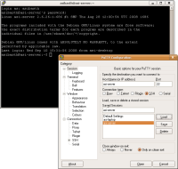
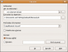
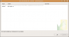

Le Serveur
Fait maison
Pour installer Subversion, pas besoin d'un serveur à 3000€, surtout si vous êtes seuls à travailler sur votre dépôt, une machine des plus modestes vous suffira ; pour ma part, je fais tourner le serveur sans problème sur un Pentium III avec 256 Mo de RAM, et même sur un Pentium II avec 128 Mo de RAM, la puissance importe peu ; si vous pouvez faire tourner votre système, vous pouvez faire tourner Subversion.
Ce qu'il vous faudra surveiller en revanche, c'est votre espace disque et votre connexion : si vous hébergez le serveur chez vous, prévenez bien vos coéquipiers qu'il faudra être patient si vous possédez une offre Internet d'un autre âge (comme une connexion à 512 k) ; si en revanche vous avez une connexion décente (60 k en upload), vous pourrez sans problème héberger un dépôt léger, comme des codes source. Pour de gros fichiers, un serveur dédié serait préférable.
Pour l'espace disque, c'est ce que vous comptez y mettre qui pourra poser problème : gardez en mémoire que dans un système de versionnement, toutes les versions des fichiers sont conservées, même celles des plus gros.
Serveur dédié
Si vous possédez un serveur dédié, ou mieux, si vous connaissez quelqu'un d'assez sympa pour vous en prêter un (si, si, ça peut arriver :D ) : c'est tout bénef', espace disque et bande passante à volonté. En revanche, ce serveur il vous faudra le payer, ça peut tourner dans les 30 € par mois pour une Dedibox ou 20 € par mois pour un Kimsufi. Un peu cher payé si vous voulez juste un serveur SVN.

Le Client (SSH)
Dans les deux cas, il vous faudra pouvoir vous connecter à votre serveur via SSH, ou, si vous hébergez votre serveur vous-mêmes, un clavier et un écran suffiront.
Si vous avez une machine capable d'utiliser un serveur SVN, elle doit être aussi en mesure de faire tourner un client SSH, si vous êtes sous Linux la commande ssh sera de rigueur ; si vous êtes sous Windows, PuTTY ou Poderosa vous seront bien utiles.
Je ne vais pas vous apprendre à vous servir de votre client SSH : si vous ne savez pas ce qu'est SSH, sachez juste que c'est avoir accès à la console de votre serveur à travers Internet ; tout ce dont vous avez besoin, c'est un client SSH, un serveur avec SSH qui tourne dessus et votre login.
Si vraiment vous avez peur de vous planter, vous pouvez toujours relire l'introduction à SSH de M@teo21, je vous encourage aussi à lire la suite du cours si ce n'est pas déjà fait.
Installation
Pour installer Subversion, rien de plus simple, vous savez sûrement comment procéder : aptitude !
asi-server:~# aptitude install subversion
C'est tout pour l'installation : qui ose encore dire que Linux est compliqué ? ;)
Configuration
Le problème maintenant, ça va être de faire « tourner » Subversion.
Mais... On vient de l'installer, non ? Ça ne suffit pas ?
Eh bien non, en fait, Subversion propose plusieurs solutions pour être exécuté, on peut le faire tourner en daemon, via inetd, via Apache/WebDAV ou je ne sais quoi encore. Du fait de cette diversité, il faudra configurer nous-mêmes la manière de lancer Subversion. Quand on connaît l'astuce, c'est d'une grande simplicité.
Tout d'abord, créez le dossier /var/svn, c'est dans ce dossier que l'on placera nos dépôts SVN.
asi-server:~# mkdir /var/svn
Libre à vous de choisir un autre dossier, si vous avez un deuxième disque dur et souhaitez placer vos dépôts dessus, aucun problème.
Il vous faut maintenant créer le fichier /etc/init.d/svnserve : pour ce faire, utilisez votre éditeur de texte préféré, pour ma part ce sera nano.
asi-server:~# nano /etc/init.d/svnserve
Dans ce fichier, il faudra placer un script qui permettra au système de démarrer le serveur SVN à chaque démarrage de la machine ; à moins de bien connaître le bash, ce script, vous n'allez pas le pondre : je vous le donne donc, c'est une version très basique mais qui fonctionne très bien.
#!/bin/sh
do_start () {
svnserve -d -r /var/svn --pid-file /var/run/svnserve.pid
}
do_stop () {
start-stop-daemon --stop --quiet --pidfile /var/run/svnserve.pid
}
case "$1" in
start)
do_start
;;
stop)
do_stop
exit $?
;;
restart)
do_stop
sleep 1s
do_start
;;
reload|force-reload)
echo "Error: argument '$1' not supported" >&2
exit 3
;;
*)
echo "Usage: $0 start|stop|restart" >&2
exit 3
;;
esac
La commande qui nous intéresse dans tout ce charabia c'est svnserve -d -r /var/svn. Le paramètre -d contraint de lancer le serveur en daemon, le paramètre -r /var/svn indique la racine des dépôts, c'est-à-dire le dossier où seront stockés les dépôts ; si vous souhaitez placer les dépôts ailleurs, c'est ce paramètre qu'il vous faudra adapter.
Il faut maintenant indiquer au système que ce fichier est exécutable, et qu'il doit être exécuté à chaque démarrage de la machine. Pour indiquer que le fichier est exécutable, on utilisera tout simplement chmod ; pour indiquer que c'est un programme à démarrer automatiquement, il faudra utiliser une autre commande, update-rc.d.
asi-server:~# chmod +x /etc/init.d/svnserve
asi-server:~# update-rc.d svnserve defaults
Adding system startup for /etc/init.d/svnserve ...
/etc/rc0.d/K20svnserve -> ../init.d/svnserve
/etc/rc1.d/K20svnserve -> ../init.d/svnserve
/etc/rc6.d/K20svnserve -> ../init.d/svnserve
/etc/rc2.d/S20svnserve -> ../init.d/svnserve
/etc/rc3.d/S20svnserve -> ../init.d/svnserve
/etc/rc4.d/S20svnserve -> ../init.d/svnserve
/etc/rc5.d/S20svnserve -> ../init.d/svnserve
asi-server:~# /etc/init.d/svnserve start
Voilà ! Votre serveur est prêt à être utilisé !
Si un jour vous voulez vous en débarrasser, vous pouvez utiliser cette commande :update-rc.d -f svnserve remove.
Créer un dépôt
Faire un dépôt
Maintenant que le serveur est fonctionnel, il nous faut créer un dépôt SVN ; créons le dépôt 'sdz' par exemple.
Pour créer le dépôt, nous allons utiliser svnadmin : retenez-la, elle est très utile ; si vous voulez plus d'informations sur cette commande, tapez svnadmin help dans la console. La « sous-commande » de svnadmin que nous allons utiliser est tout simplement create, qui signifie « créer » en anglais.
asi-server:~# svnadmin create /var/svn/sdz
Le dépôt est créé mais pas encore réellement utilisable, il faut d'abord définir les droits des utilisateurs ainsi que les logins : ces informations sont stockées dans les fichiers svnserve.conf et passwd qui sont eux-mêmes stockés dans le dossier conf qui, lui, est stocké à la racine de votre dépôt, /var/svn/sdz dans notre cas.
Les droits
Les droits (qui sont très basiques) sont contenus dans le fichier /var/svn/sdz/conf/svnserve.conf. Ouvrez-le, cherchez ces lignes et supprimez le symbole # qui se trouve devant :
Citation : /var/svn/sdz/conf/svnserve.conf
# anon-access = read
# auth-access = write
# password-db = passwd
Maintenant que ces trois lignes ne sont plus en commentaire, il faut faire en sorte que les utilisateurs qui n'ont pas de login ne puissent pas accéder au dépôt, et que ceux qui en ont un puissent lire et écrire les fichiers. Il faut tout simplement éditer deux des lignes que vous venez de voir pour qu'elles ressemblent à ça :
Citation : /var/svn/sdz/conf/svnserve.conf
anon-access = none
auth-access = write
password-db = passwd
anon-access = none signifie que les utilisateurs anonymes (sans login) n'auront aucun accès.
auth-access = write donne les droits d'écriture (et de lecture) aux utilisateurs enregistrés.
password-db = passwd indique l'emplacement du fichier qui contient les mots de passe. Si vous avez besoin de placer le fichier à un endroit particulier ou si vous voulez partager un même fichier entre plusieurs dépôts, vous pouvez en indiquer le chemin ici.
Les utilisateurs
Pour ajouter ou modifier les utilisateurs, c'est très simple : les utilisateurs sont listés dans le fichier /var/svn/sdz/conf/passwd. Ouvrez ce fichier et en dessous de [users], placez votre login sous cette forme :
Citation : /var/svn/sdz/conf/passwd
nom = motdepasse
Si mon nom est miaouss et mon mot de passe dominerlemonde, le fichier ressemblera à ça :
Citation : /var/svn/sdz/conf/passwd
[users]
miaouss = dominerlemonde
Si je veux rajouter un ou plusieurs utilisateurs, le fichier aura alors cette tête :
Citation : /var/svn/sdz/conf/passwd
[users]
miaouss = dominerlemonde
jessie = pourvousjouer
james = unmauvaistour
Notre serveur est maintenant fonctionnel !
Essayons !
Créons un dossier sur notre bureau et tentons d'extraire notre dépôt.

C'est fait !
Voilà, ce n'était pas bien compliqué : maintenant, vous avez de quoi travailler efficacement, ou de quoi vous amuser avec Subversion, du moins. :D
(Sources graphiques : Michael Jastremski, le logo Subversion, et mon desktop.)
{kind=link}
{kind=link}
{kind=link}
{kind=link}